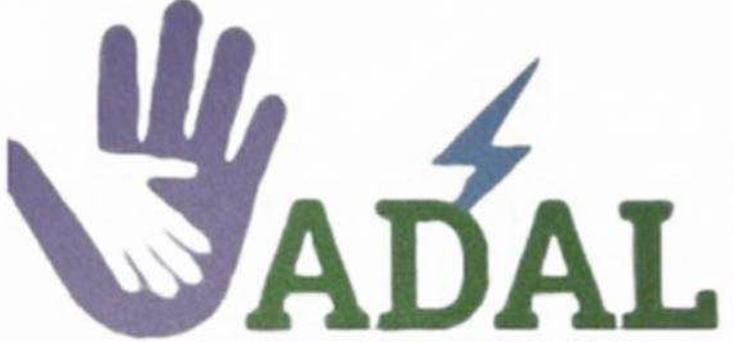

ADAL - Association pour le Développement d'Ajar

ADAL
📅 Création : 2021
📜 Récépissé n°: FA 010000242301202305689 du 24/01/2023
👤 Président : Moussa Boubou Sy
👤 Secrétaire Général : Ladji Bakary Diabira (Kisma Diabira)
👤 Trésorier : Dambou Silly Diallo (Harouna Silly Diallo)
L'ADAL est née d'une vision de Diabe Soumare. L'association a obtenu son récépissé officiel en 2023. En 2025, Cheikhou Diabira rejoint ADAL et est nommé Président de la Commission Culturelle et Sportive, avec Daouda Diallo comme adjoint.
Voir les activitésTournoi de Couva - 2025
À partir du 21 février 2025, la Commission Culturelle et Sportive d'ADAL a organisé un tournoi à Couva réunissant plusieurs équipes.
🏆 Finale du tournoi
Stade Big Five - Couva
11 mai 2025
Association de la Jeunesse d'Ajar
Jeunesse d'Ajar
L'Association de la Jeunesse d'Ajar regroupe les jeunes du village autour de projets communs : sport, culture, éducation et développement. Elle joue un rôle clé dans l'organisation des activités sportives et la mobilisation des jeunes pour les travaux communautaires.
📜 Historique de la Jeunesse d'Ajar
L'association a été fondée dans les années 1980, à l'époque où les jeunes d'Ajar se distinguaient déjà par leur engagement et leur ouverture d'esprit. Contrairement aux villages voisins, Ajar était le seul village où les jeunes filles et garçons se mélangeaient dans les activités associatives, créant ainsi un terreau fertile pour l'émergence d'une jeunesse unie et dynamique.
👥 Rôle dans le championnat
- 🏆 Organisation et gestion des matchs
- 📋 Attribution des licences (50 MRU pour les joueurs d'Ajar, 100 MRU pour les joueurs extérieurs)
- 🎓 Formation des arbitres et des jeunes aux règles du football
- 🤝 Coordination entre les clubs et résolution des conflits
🌿 Actions citoyennes
Au-delà du sport, la Jeunesse d'Ajar s'engage dans des actions concrètes pour le village : opérations d'assainissement, campagnes de sensibilisation, soutien aux activités scolaires et culturelles. Ces initiatives, régulièrement relayées sur la page Facebook officielle Ajar-Foot, démontrent l'implication des jeunes dans le développement durable de leur communauté.